Deep dive · optional reading
What is chemical engineering?
Chemical engineers design the processes that turn raw materials into useful things: milk into paneer, cane into sugar, crude oil into fuel, a few cells into a vaccine. They work out how to do it safely, reliably, at scale, and without waste.
You already practise most of it. Soaking, grinding, fermenting, frying, straining and tasting-then-adjusting are the same ideas a chemical plant runs on, just at kitchen size. Here are twelve of the big ones, each drawn in pencil and tied to something you have cooked.
No equations needed. Skip straight to the food any time.
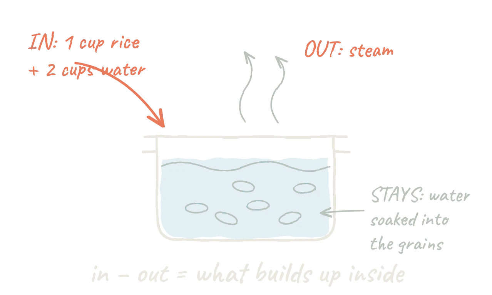
Engineers keep a ledger for every kilogram that enters and leaves a process. If the numbers don't add up, something is leaking, burning or hiding where nobody looked.
In your kitchenRice needs about twice its volume of water because some boils off as steam and the rest ends up inside the grains. Lid on means less escapes, so you need less.
In industryA dairy knows exactly how much milk becomes paneer and how much leaves as whey, and sells the whey too.
Heat transfer
touch, flow and glow
Heat always flows from hot to cold, by three routes: through solid contact, carried by a moving liquid or gas, or as invisible infrared light. Designing equipment is mostly about getting the right amount of heat to the right place.
In your kitchenA cast-iron tawa holds heat for a crisp dosa; stirring a pot speeds convection; a tandoor's 400 °C walls cook naan by radiation in about a minute.
In industryMilk is pasteurised by flowing past hot steel plates in a heat exchanger: about 72 °C for 15 seconds, then cooled straight back down.
Diffusion
from crowded to empty
Molecules wander from where there are many to where there are few. It is slow, and it gets much slower with distance: double the thickness and it takes about four times as long.
In your kitchenCut paneer or chicken smaller and the marinade gets in far faster. Crushed CTC tea colours water in a minute; whole leaves take longer.
In industrySugar mills extract sugar from shredded cane by diffusion; instant coffee and tea are made the same way, then dried.
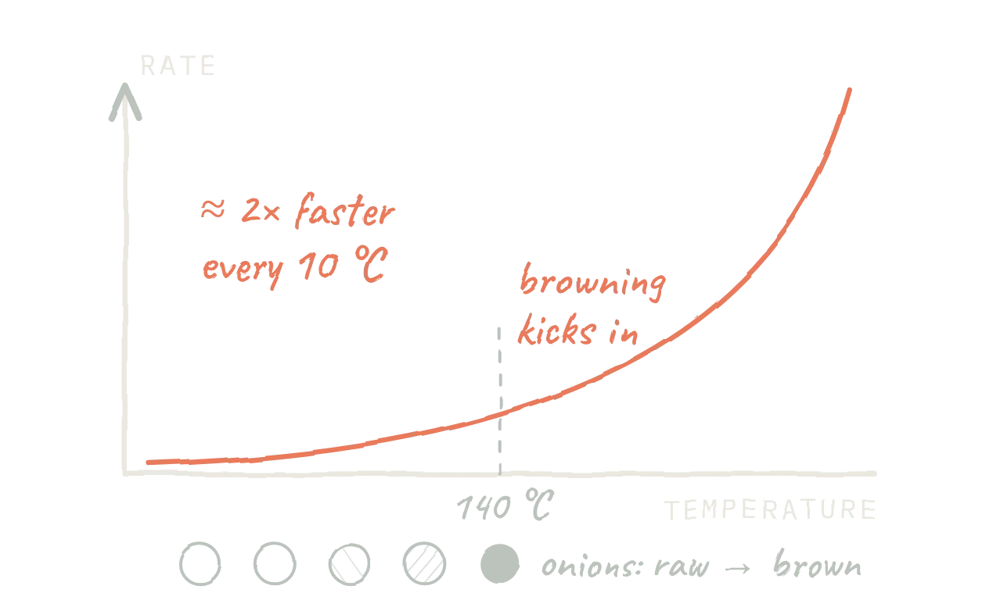
Chemical reactions speed up sharply as things heat up. That one fact decides cooking times, shelf life, and how big a reactor has to be.
In your kitchenBrowning (the Maillard reaction) barely happens in boiling water at 100 °C but races in hot oil. Sugar syrup changes stage within a few degrees, which is why jalebi chashni needs watching.
In industryCompanies "age" products quickly in warm rooms to predict shelf life, and run reactors at the temperature that balances speed against unwanted side reactions.
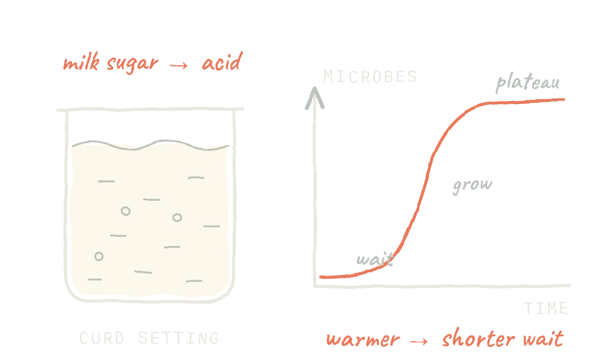
Bacteria and yeast are living chemical factories. Give them food, warmth and time, and they make acid, gas, flavour and texture. A tank that runs them under control is called a bioreactor.
In your kitchenIdli batter rises from carbon dioxide; curd thickens as acid sets the milk protein. In a cold winter kitchen both can take twice as long.
In industryThe same idea, in steel tanks with sensors, makes yoghurt, bread yeast, insulin, many vaccines and ethanol fuel.
Pressure & boiling
why the cooker whistles
Water boils at 100 °C only at sea-level pressure. Trap the steam and the pressure rises, so the water has to get hotter before it can boil. Every pressurised vessel needs a relief valve in case the pressure climbs too far.
In your kitchenAt about 120 °C, dal and rajma soften in a fraction of the open-pot time. In the mountains water boils below 100 °C, so open-pot cooking is slower there.
In industryCanned food is sterilised in giant pressure cookers called retorts at 121 °C. Boilers and reactors carry relief valves, just like your whistle.
Flow & thickness
how fast does it pour?
How easily a liquid flows is its viscosity. Engineers size every pipe and pump around it, and many foods are trickier still: they get thinner when you stir them and thicker when they rest.
In your kitchenGood dosa batter pours in a ribbon and spreads itself on the tawa. Too thick and it tears; too thin and it runs and won't crisp.
In industryKetchup, chocolate and toothpaste are pumped through pipes designed for exactly how thick and "shear-thinning" they are.
Much of a chemical plant is about separating mixtures, using differences in size, boiling point or density. Separation is often the most expensive part of the whole process.
In your kitchenMuslin catches paneer curds and lets whey through; churning buttermilk floats the lighter butterfat; making ghee drives off water and leaves the milk solids behind.
In industryDairies spin milk in cream separators; refineries split crude oil in tall distillation columns; Kannauj still distils attar in copper pots.
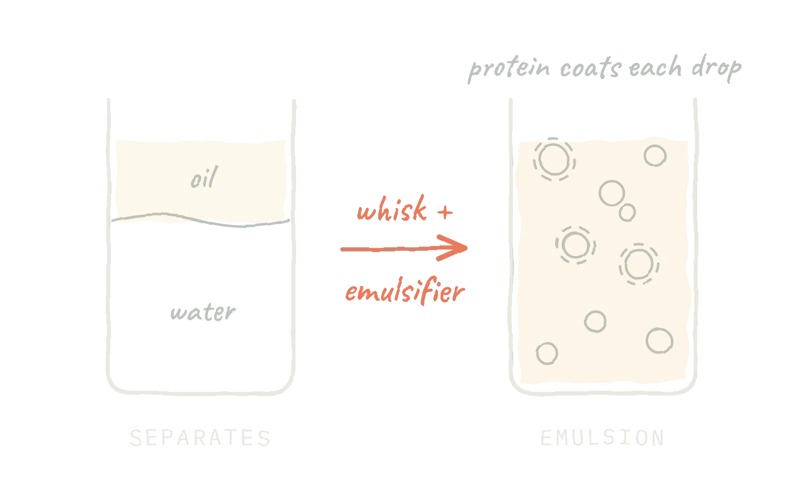
Some things refuse to mix. Break one into tiny droplets and coat them with an emulsifier (often a protein), and they stay suspended. Mixing well is a whole branch of engineering on its own.
In your kitchenKadhi can split if it boils too hard; whisking besan into the curd first protects it. Cashew paste makes a creamy korma sauce that holds together.
In industryIce cream, mayonnaise, milk itself, paints and many medicines are emulsions engineered to stay stable on the shelf.
Chemical engineers break any process into standard building blocks called unit operations: mixing, grinding, heating, evaporating, filtering, drying. Learn the blocks and you can read, or design, almost any plant.
In your kitchenIdli and dosa share the same chain (soak, grind, ferment); only the last step differs: steaming versus frying on a tawa.
In industryEngineers draw these chains as process-flow diagrams, like the dosa plant on the home page, before a single pipe is built.
No process runs perfectly by itself. A control loop measures something, compares it with a target and makes a correction, over and over. A refinery runs thousands of these loops at once, mostly automatically.
In your kitchenTasting and adjusting salt is a feedback loop, and so is turning the flame down when the oil starts to smoke. An oven thermostat does it for you.
In industrySensors read temperature, pressure and flow every second, and controllers nudge valves to hold each one on target.
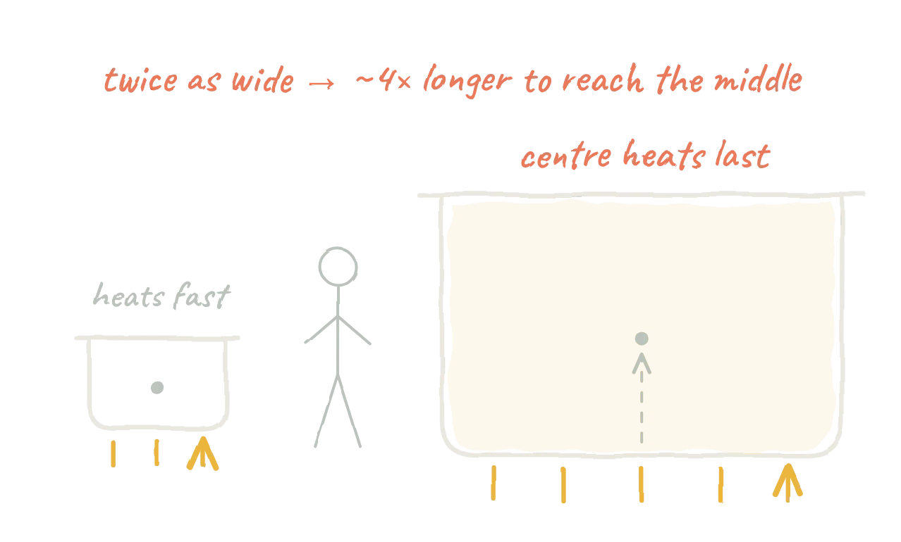
A recipe that works for four rarely works unchanged for four hundred. Volume grows faster than surface area, so heat takes longer to reach the middle, and there is more to go wrong. Before scaling up, engineers ask "what happens if this goes wrong?", and build in the answer.
In your kitchenWedding biryani is layered and sealed for dum so steam cooks the centre evenly, and cooks stir big kadhais constantly so nothing scorches at the bottom.
In industryNew processes go from lab flask to a small pilot plant to full scale, with safety studies at each step.